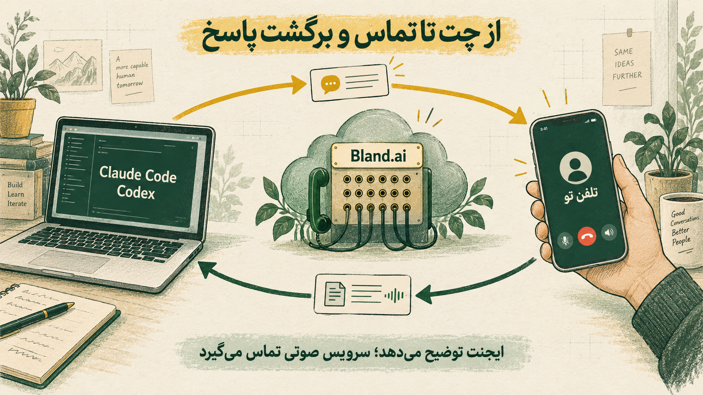
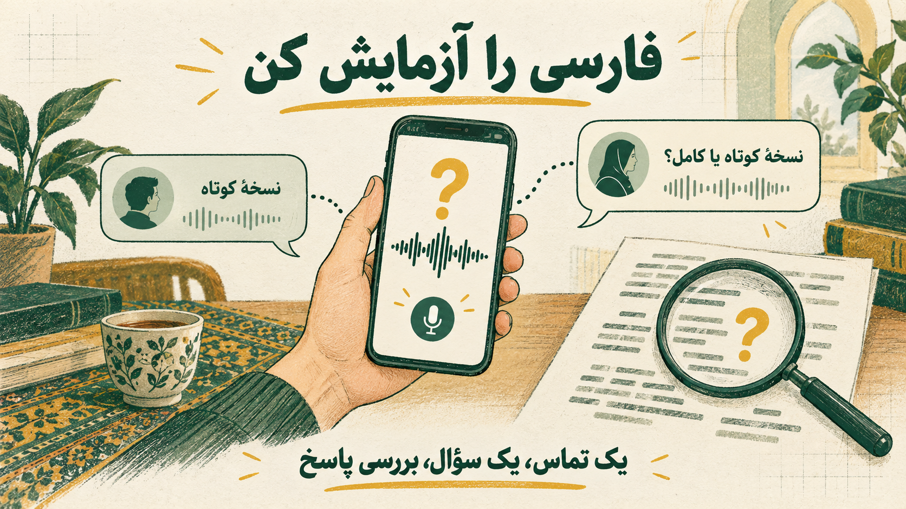

فرض کن یک کار طولانی به ایجنت سپردهای و از پشت کامپیوتر بلند شدهای. وسط کار، به یک سؤال میرسد: نسخهٔ کوتاه ویدیو را آماده کند یا نسخهٔ کامل را؟ برای ادامه به جواب تو نیاز دارد، اما تو چت را نمیبینی.
حالا اگر بتواند به تلفنت زنگ بزند، سؤالش را بپرسد و جواب را به همان پروژه برگرداند چه؟
ایدهٔ این اتصال همین است. در چت مینویسی «بهم زنگ بزن». ایجنت موضوع تماس را آماده میکند، یک سرویس تلفنی شمارهات را میگیرد و بعد از پایان مکالمه، متن حرفهایت به ایجنت برمیگردد.
این روش به یک ابزار خاص محدود نیست. هر ایجنتی که در محیطش امکان اجرای برنامهٔ تماس، دسترسی به سرویس و خواندن نتیجه را داشته باشد، میتواند چنین اتصالی داشته باشد. اینجا تمرکزمان روی Claude Code و Codex است.
تا کجا آزمایش شده؟ در تجربهٔ ثبتشده با Claude Code، دو تماس به صندوق صوتی رسیدند. در یکی از آنها، جملهٔ فارسی شروع شد. مکالمهٔ دوطرفهٔ فارسی، اجرای کامل از داخل مهارت و راهاندازی Codex هنوز تأیید نشدهاند.
وقتی میگویی «بهم زنگ بزن»، چه اتفاقی میافتد؟
ایدهٔ اولیه از راهنمای «Let Your Agent Call You» در agentnative آمده است. ساختارش ساده است: ایجنت توضیح میدهد دربارهٔ چه چیزی تماس بگیرند و سرویس صوتی مکالمه را انجام میدهد. در این پروژه، سرویس تماس Bland.ai است.
Claude Code یا Codex زمینهٔ پروژه را دارد: چه کاری انجام شده، چه چیزی باقی مانده و کدام تصمیم به تو مربوط است. قبل از تماس، همین اطلاعات را به یک توضیح کوتاه تبدیل میکند. Bland شماره را میگیرد، صدایت را دریافت میکند و پاسخ صوتی میدهد. بعد از تماس، متن مکالمه به ایجنت برمیگردد.
پس صدایی که میشنوی متعلق به ایجنت صوتی Bland است. توانایی Claude یا Codex در نوشتن فارسی، بهتنهایی کیفیت شنیدن و صحبتکردن فارسی پشت تلفن را تعیین نمیکند.

«وقتی نسخهٔ اولیه آماده شد، بهم زنگ بزن و بپرس خروجی عمودی میخوام یا افقی.»
در این سناریو، ایجنت به سرویس تماس میگوید نسخهٔ اولیه آماده است و فقط باید نسبت تصویر را بپرسد. تو جواب میدهی «عمودی، برای ریلز». بعد از تماس، ایجنت متن جواب را میخواند و ادامهٔ کار را با همان انتخاب پیش میبرد. این رفتار هدف ماست؛ برای اطمینان باید همهٔ مراحلش را با یک آزمایش ساده بررسی کنیم.
چه چیزهایی لازم داری؟
| قطعه | کارش چیست؟ |
|---|---|
| Claude Code یا Codex | آمادهکردن سؤال و ادامهٔ کار بعد از دریافت جواب |
| مهارت call-me | دستورالعمل زمان تماس، محتوای آن و نحوهٔ استفاده از نتیجه |
| برنامهٔ call.py | ارسال درخواست تماس و انتظار برای نتیجه |
| حساب Bland | برقراری تماس و اجرای مکالمهٔ صوتی |
| کلید API و شمارهٔ تو | دسترسی برنامه به حساب و مشخصکردن مقصد تماس |
مهارت یا Skill در اینجا یک فایل دستورالعمل است. به ایجنت میگوید وقتی کاربر تماس خواست، چه اطلاعاتی آماده کند و با نتیجه چه کند. برنامهٔ تماس بخش اجرایی کار را انجام میدهد.
در نسخهٔ Claude Code، این فایلها در پوشهٔ مهارت شخصی ~/.claude/skills/call-me/ قرار گرفتهاند. مستندات رسمی Claude Code ساختار مهارتها را توضیح میدهد. برای Codex، همین منطق تماس قابل استفاده است، اما دستورالعمل مهارت، محل نصب و مجوزهای اجرا باید متناسب با محیط آن تنظیم و آزمایش شوند.
راهاندازی را با یک تماس کوتاه شروع کن
۱. حساب و هزینه را بررسی کن
در Bland حساب میسازی، بخش Billing را بررسی میکنی و کلید API میگیری. کلید API به برنامه اجازه میدهد با حساب تو درخواست تماس بفرستد.
در حساب آزمایشیِ گزارششده، ۱٫۹۸ دلار اعتبار اولیه وجود داشت و هزینهٔ مکالمه در پلن Start دقیقهای ۰٫۱۴ دلار نمایش داده میشد. با همین نرخ، تماس دودقیقهای حدود ۰٫۲۸ دلار میشود. این عددها مربوط به همان حساب و زمان آزمایشاند؛ مبلغ و شرایط حساب خودت را قبل از تماس بررسی کن.
شمارهٔ تست کانادایی بود. در گزارش، برای تماس خارج از آمریکا و کانادا خرید حداقل ۵ دلار اعتبار لازم بود؛ اما این شرط بهمعنی قابلتماسبودن همهٔ کشورها نیست. تماس با شمارهٔ ایران در این پروژه آزمایش نشده است.
۲. کلید را آماده کن
در نسخهٔ مک، کلید داخل Keychain ذخیره میشود؛ همان بخش سیستمعامل که رمزها را نگه میدارد. برنامه هنگام اجرا کلید را میخواند و در درخواست به Bland استفاده میکند. لازم نیست مقدار کلید را در چت یا داخل متن مهارت بنویسی.
شمارهٔ تلفن هم با قالب بینالمللی، شامل علامت + و کد کشور، تنظیم میشود. ساخت حساب، خرید اعتبار و واردکردن کلید در این راهاندازی با خود کاربر است.
۳. تماس را از پروژهٔ اصلی جدا آزمایش کن
برای شروع، یک سؤال ساده کافی است: «نسخهٔ کوتاه را میخواهی یا کامل؟» هنوز نیازی نیست تماس را به یک کار طولانی وصل کنی.
برنامه موضوع تماس، جملهٔ آغازین و سقف مدت را به سرویس میفرستد و بعد وضعیت تماس را بررسی میکند. این تنظیمات در API رسمی Bland وجود دارند. در برنامهٔ این پروژه، حالت dry-run هم برای دیدن درخواست بدون شمارهگیری در نظر گرفته شده است.
این راهنما مسیر ساخت را توضیح میدهد و بستهٔ نصب آماده ندارد. پیش از تماس واقعی، برنامهٔ اتصال و مهارت را مطابق این ساختار آماده و بررسی کن.
۴. قواعد تماس را در مهارت مشخص کن
یک اتصال خوب باید بداند چه وقت تماس بگیرد و بعد از تماس چه کند. در نسخهٔ توصیفشده، این قواعد در مهارت آمدهاند:
- فقط با درخواست کاربر در همان گفتوگو تماس بگیر.
- برای هر درخواست، یک تماس انجام بده؛ روی صندوق صوتی خودکار دوباره شماره نگیر.
- موضوع و سؤالها را کوتاه و روشن بنویس و اطلاعات محرمانه را وارد توضیح تماس نکن.
- سقف مدت تماس داشته باش.
- بعد از تماس، برداشتت از پاسخ را در چت اعلام کن؛ اگر مبهم بود، توضیح بخواه.
در تجربهٔ Claude Code، کنترل مجوزها جلوی بعضی تلاشها را گرفت و برای برنامهٔ مشخص تماس، مجوز اجرا تنظیم شد. این تنظیم را نباید عیناً به Codex منتقل کرد؛ هر ابزار باید طبق سازوکار مجوزهای خودش تنظیم شود.
۵. برگشت جواب را هم امتحان کن
زنگخوردن گوشی فقط یک بخش ماجراست. آزمایش کامل زمانی موفق است که جواب تو درست ثبت شود، به ایجنت برگردد و روی کار بعدی اثر بگذارد.
اگر گفتی «نسخهٔ کوتاه»، باید در چت ببینی ایجنت همین انتخاب را فهمیده و ادامهٔ کار را بر اساس آن انجام میدهد. در این طراحی، ایجنت هنگام تماس منتظر نتیجه میماند. برای تماس پس از پایان یک کار هم اجرای آن باید بتواند تا آن مرحله ادامه پیدا کند؛ نصب مهارت بهتنهایی یک سرویس همیشهروشن نمیسازد.
اولین تماسها به کجا رسیدند؟
دو تماس ثبتشده حدود ۹ ثانیه طول کشیدند و به صندوق صوتی رسیدند. یکی با ایجنت پیشفرض انگلیسی انجام شد. در دیگری، جملهٔ فارسی شروع شد: «سلام! من دستیا…» و بعد پیام صوتی پخش شد.
این نتیجه نشان میداد درخواست به سرویس رسیده است. علت دقیق نرسیدن به کاربر قطعی نبود؛ بیصداکردن شمارههای ناشناس، حالت Focus، اشغالبودن خط یا فیلتر اپراتور از موارد قابل بررسی بودند.
اگر همین اتفاق برای تو افتاد، بخش Conversations در Bland را ببین. متن مکالمه، مدت تماس و دلیل پایان آن کمک میکنند بفهمی مشکل قبل از شمارهگیری بوده یا بعد از آن. در تست بعدی هم آمادهٔ پاسخدادن به شمارهٔ ناشناس باش.
فارسی را جداگانه آزمایش کن
شروعکردن یک جملهٔ فارسی، فهمیدن جواب فارسی و ثبت درست آن سه آزمون جدا هستند. تست فعلی فقط شروع جمله را نشان داده است.

در تنظیمات اولیه از حالت babel استفاده شد و بعد تنظیم به fluent تغییر کرد تا جابهجایی زبان بررسی شود. Bland برای حالتهای چندزبانهٔ خود پوشش و کاربردهای متفاوتی توصیف میکند؛ انتخاب Fluent بهتنهایی تأیید کیفیت فارسی نیست. توضیح رسمی Bland دربارهٔ Fluent
متن دستور تماس هم اثر دارد. اگر نوشته باشی «همیشه فارسی جواب بده»، با انگلیسی حرفزدن تو لزوماً زبان عوض نمیشود. در نسخهٔ اصلاحشده، دستور این بود: با زبان جملهٔ آغازین شروع کن و بعد به زبان آخرین صحبت کاربر پاسخ بده.
برای اولین بررسی، دو گزینهٔ روشن بده، یکی را انتخاب کن و متن ثبتشده را بخوان. اگر فارسی درست ثبت نشد، همان سؤال را انگلیسی امتحان کن تا مشخص شود مشکل به زبان مربوط است یا مسیر انتقال جواب. انتخاب Claude Code یا Codex بهتنهایی مشکل شنیدن فارسی در سرویس تلفنی را حل نمیکند.
این اتصال کجا به کارت میآید؟
بهترین سؤال برای تماس، سؤالی است که با یک توضیح کوتاه فهمیده شود: «عمودی یا افقی؟»، «نسخهٔ کوتاه یا کامل؟» یا «برای ادامه منتظر فایل جدید بمانم؟»
در این پیادهسازی، ایجنت تلفنی فقط توضیحی را دارد که برایش فرستاده شده است و وسط تماس به فایلهای پروژه دسترسی ندارد. بنابراین سؤال «به نظرت کل پروژه را چطور تغییر بدهیم؟» زمینهٔ بیشتری میخواهد و برای اولین تست انتخاب خوبی نیست.
اطلاعات تماس هم از Bland عبور میکند. در آزمایش، ضبط فعال بود تا کیفیت بررسی شود. برای استفادهٔ خودت، مشخص کن چه اطلاعاتی وارد مکالمه شوند و آیا به ضبط نیاز داری.
تمرین اول تو
یک تماس، یک سؤال و دو گزینه. وقتی پاسخ درست ثبت شد و ایجنت همان انتخاب را در ادامهٔ کار بهکار برد، اتصال را به یک پروژهٔ واقعی اضافه کن. اگر با Codex شروع میکنی، این آزمایش را مستقل انجام بده؛ نتیجهٔ Claude Code جای تست محیط تو را نمیگیرد.
مبنای تجربهٔ عملی: گزارش «Let Claude Call You: Phone Calls from Claude Code»، علی شریفی، ۱۵ اکتبر ۲۰۲۶. هزینهها و نتایج تماس به همان آزمایش مربوطاند. تصاویر با ابزار تصویرسازی داخلی ساخته شدهاند و اسکرینشات محصول نیستند.